Rekvin
A non-linear, node-based product development canvas designed to bridge the gap between creative ideation and technical feasibility.
1. Introduction to Rekvin
Rekvin is a non-linear, node-based product development canvas designed to bridge the gap between creative ideation and technical feasibility. Unlike traditional whiteboarding tools that allow for free-form chaos, Rekvin uses a Waterfall-Logic architecture where every design decision is tethered to a researched "Killer Assumption" and a strategic "Market Force."
2. The Problem
Current product management tools are either too rigid (Jira/Linear) or too messy (Miro/Figma).
- The Gap: There is no tool that forces First Principles thinking.
- The Result: Teams build "desirable" features that are technically impossible (Feasibility) or commercially non-viable (Viability).
- The Pain: Research artifacts (Personas, Journey Maps) often sit in silos and don't interact with the actual system architecture.
3. The Users
Technical Product Managers (TPMs)
Who need to model system logic and edge cases before writing PRDs.
Senior UX Designers/Scientists
Who want to validate their designs against hard data and behavioral metrics.
MSIS Students/Researchers
Who require a structured, iterative environment to document their evidence-based design process.
4. The Proposed Solution
Rekvin organizes the product lifecycle into Integrated Canvases (Ideation, Research, Design, Measurement).
- Uses Global D/V/F Lenses (Desirability, Viability, Feasibility) to filter information across the workspace.
- Utilizes React Flow to visualize relationships between data points, turning static artifacts into a living "System Contract."
5. Feature List (Milestone 2 Scope)
6. Out of Scope
What we will NOT implement:
- Real-time Collaboration
- Figma Import/Export
- Full Project Management Suite
Overview
Rekvin follows a "Dark Technical" aesthetic, inspired by professional developer tools and scientific instruments. The design prioritizes content density, focus, and clarity using a dark mode-first approach with high-contrast accents for semantic meaning.
1. Color Palette
Core Backgrounds
The application uses a deep, cool-toned black palette to reduce eye strain and make colored nodes pop.
| Token | Value | Usage |
|---|---|---|
app-bg |
#0e0e11 | Main canvas background |
app-sidebar |
#0a0a0f | Sidebar background |
app-card |
#18181b | Node cards, Modals, Panels |
app-input |
#121217 | Input fields |
Semantic Accents
Colors are used strictly for meaning, not decoration.
| Color | Tailwind Class | Usage |
|---|---|---|
| Purple | text-purple-400 |
AI-related actions, "Initial Idea", SCAMPER. |
| Blue | text-blue-400 |
Mind Maps, Market Viability, DOC files. |
| Green | text-green-400 |
Opportunity Solution Trees, Technical Feasibility, Success states. |
| Pink | text-pink-400 |
Analogies, User Desirability. |
| Yellow | text-yellow-400 |
Sticky Notes, How Might We, Warnings. |
| Red | text-red-400 |
Problem Statements, Critical Assumptions, Errors, PDF files. |
| Gray | text-gray-400/500 |
Secondary text, empty states. |
Borders & Separators
Subtle white opacity is used for structure.
- Subtle:
border-white/5(Dividers) - Default:
border-white/10(Panels, Inputs) - Active/Hover:
border-white/20(Nodes, Hover states) - Focus:
border-white/40(Selected items)
2. Typography
Font Family: Inter Tight (Sans-serif)
Selected for
its modern, technical feel and high legibility at small sizes.
Hierarchy
| Role | Style Example | Tailwind Classes |
|---|---|---|
| Display | Display | text-5xl font-bold tracking-tight |
| Headings | Headings | text-2xl font-bold text-white |
| Labels | Labels | text-xs font-bold tracking-wider uppercase opacity-90 |
| Body | Body Text | text-lg font-light leading-relaxed /
text-sm text-gray-300
|
| Mono | Mono | font-mono text-xs |
3. Component Recipes
Idea Nodes
The core building block of the canvas.
- Container:
min-w-[320px] max-w-[420px] rounded-2xl p-6 border - Default State:
bg-[#18181b] border-white/20 shadow-2xl shadow-black/50 - Suggested:
bg-[#18181b]/40 backdrop-blur-sm border-white/40 border-dashed animate-pulse-slow
Input Bar
Designed for focus and "flow" state entry.
- Container:
bg-[#18181b] border rounded-2xl p-2 shadow-2xl shadow-black/50 - Text Area:
bg-transparent text-white text-lg font-light h-20
Modals & Overlays
Used for Onboarding and Phase Completion.
- Backdrop:
bg-black/80 backdrop-blur-md - Card:
bg-[#18181b] border border-white/10 rounded-2xl shadow-2xl
Phase Complete
You have finished the Ideation phase.
Sidebars & Panels
Floating utility panels.
- Container:
bg-[#18181b] border border-white/10 rounded-xl shadow-2xl backdrop-blur-sm
4. Effects & Animation
Shadows
Deep, diffuse shadows are used to create depth in the dark environment.
- Elevation:
shadow-2xl shadow-black/50(Nodes) - Floating:
shadow-2xl shadow-black/80(Modals)
Animations
Custom keyframes defined in tailwind.config.
animate-fade-in: Smooth entry for new elements.animate-fade-in-up: Upward drift for landing page elements.animate-pulse-slow: 3s pulse for "Suggested" nodes (breathing effect).animate-spin: Loading states (LucideLoader2).
Glassmorphism
Used sparingly to indicate layering.
backdrop-blur-sm: Sticky headers, floating panels.backdrop-blur-md: Modal overlays.
1. The Evolutionary Journey
Every version of Rekvin asked a different question. What started as "how do we add more context to design decisions?" became "how do we test if those decisions were even right?" This is the story of three pivots, each one sharper than the last.
More Context. Same Result.
The original frustration was simple: design tools like Miro let you sketch anything, but they don't force you to justify why. So Rekvin v1 was built around a node-based canvas where every feature had to be connected to a "Killer Assumption" and a "Market Force." If a node had no grounding evidence, it couldn't exist.
The canvas came alive. Workflows emerged. Relationships between ideas that were previously invisible became explicit. Teams could trace a single button all the way back to a user pain point.
But something felt off. After a few sessions, we noticed that the output — the final design decisions — wasn't meaningfully different from what teams produced without the tool. We had built a better filing cabinet. Not a better design environment.
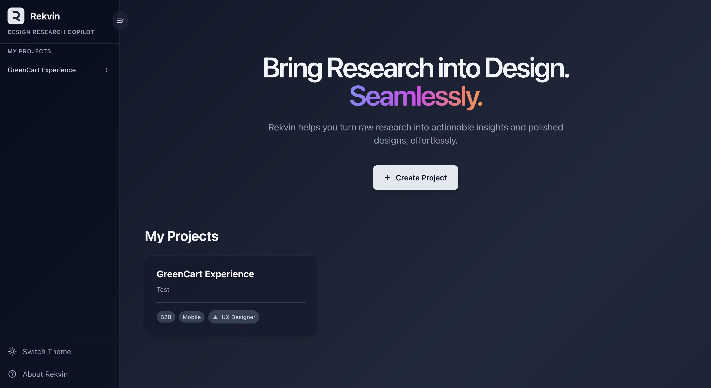
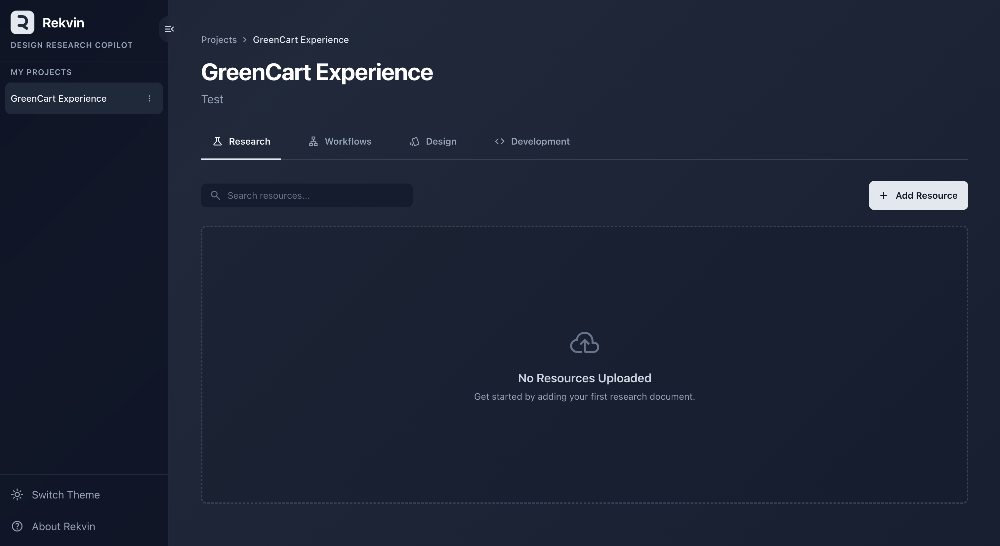
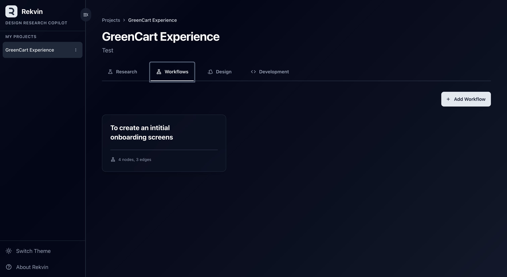
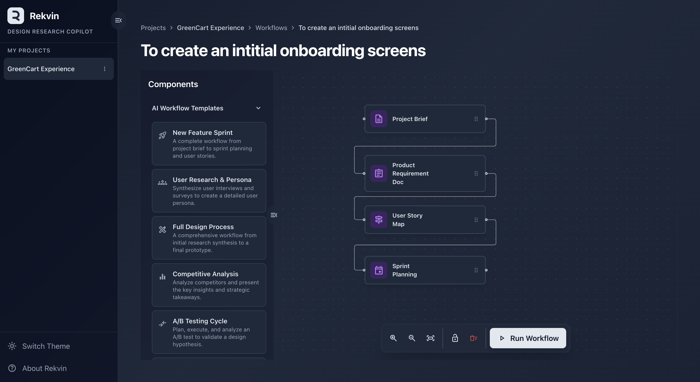
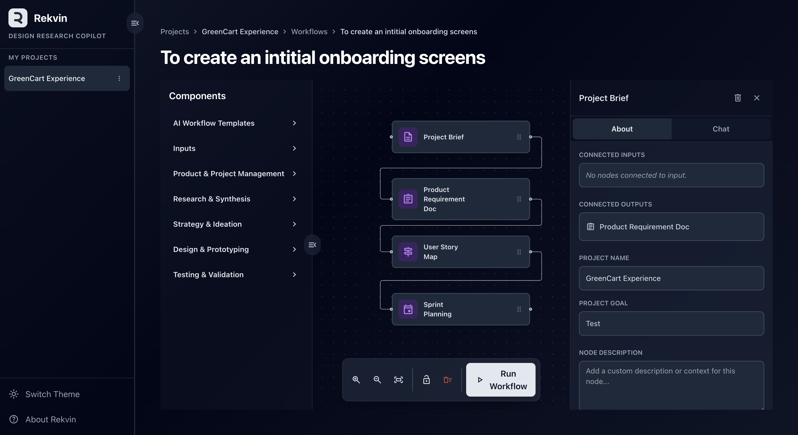
The Output of One Is the Input of Another.
The v1 insight led to a structural question: what if the output of one design phase could become the input for the next? This became Rekvin v2 — a multi-canvas system where design artifacts flowed between stages like data in a pipeline.
At the same time, something else shifted. The cost of building prototypes had dropped dramatically. AI coding tools could spin up a working interface in hours. The bottleneck was no longer building — it was choosing. Teams had three viable interface options and no rigorous way to compare them.
Rekvin v2 tried to solve that by letting designers run parallel canvases side by side. But the more we watched teams use it, the more clear the problem became: managing separate canvases added friction without adding clarity. People were spending more time organizing the tool than using it to think.
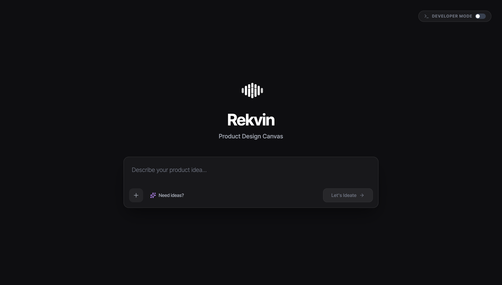
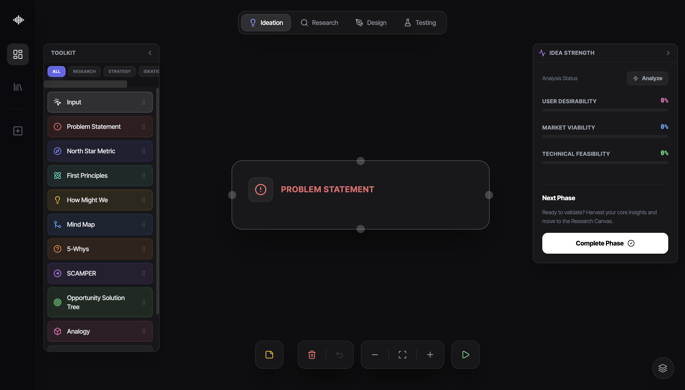
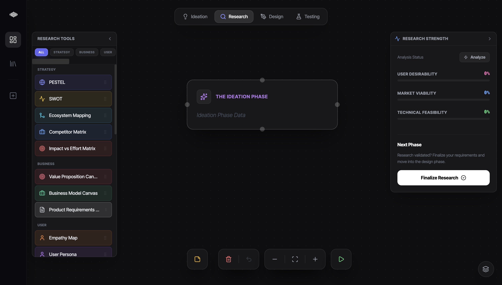
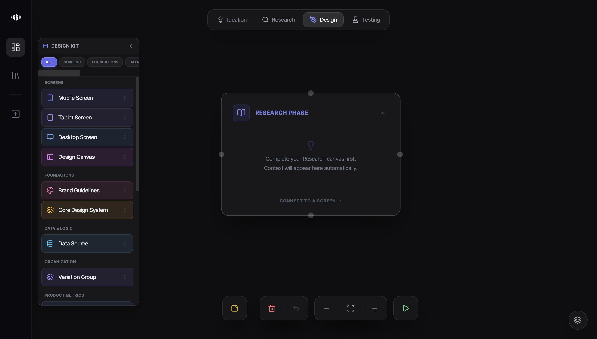
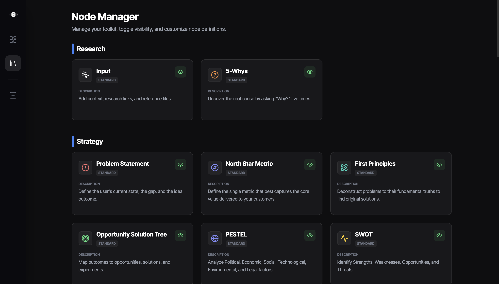
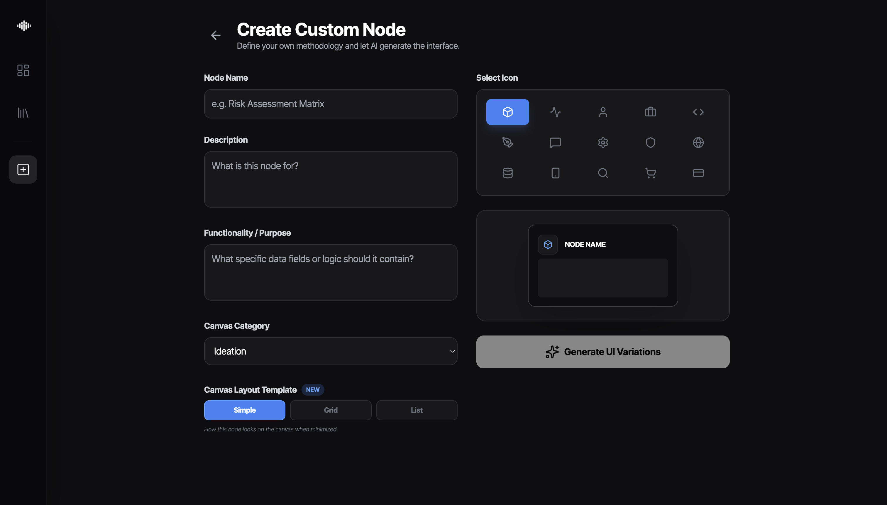
Stop Building. Start Testing.
The real problem wasn't ever the canvas. It was the question being asked. We had been asking "how should we design this?" when the more powerful question was "does this design actually work — for a real person, with real goals, under real pressure?"
Rekvin v3 abandoned the multi-canvas architecture entirely. Instead of helping designers document their intent, it deploys autonomous synthetic personas — AI agents calibrated with behavioral profiles, cognitive biases, and domain expertise — to test interfaces directly.
The persona navigates a live application like a real user would. Gemini's multimodal vision watches the UI in real time. Every hesitation, misclick, and dead-end becomes data. After each session, the Metrics Hub translates the agent's raw experience into a structured analysis: Comprehension Risk, Friction Points, Task Completion Confidence. Design decisions that seemed solid on paper reveal their cracks under scrutiny.
The prototype is no longer the deliverable. It's the laboratory.
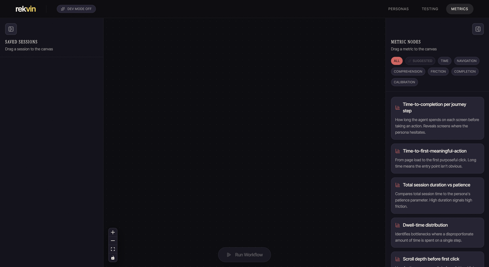
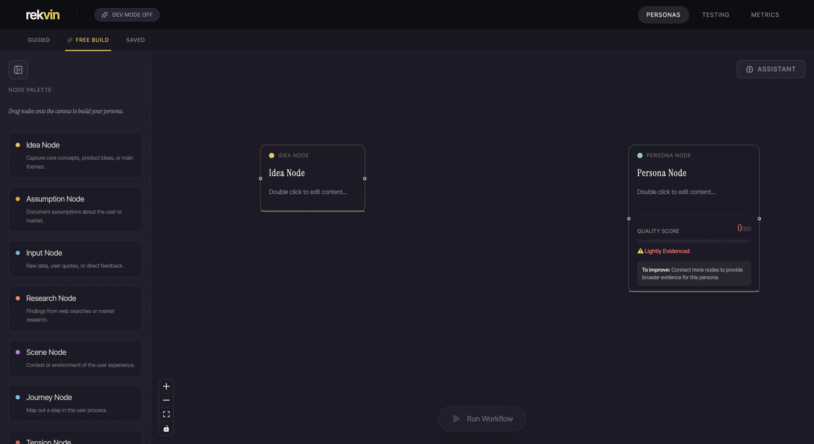
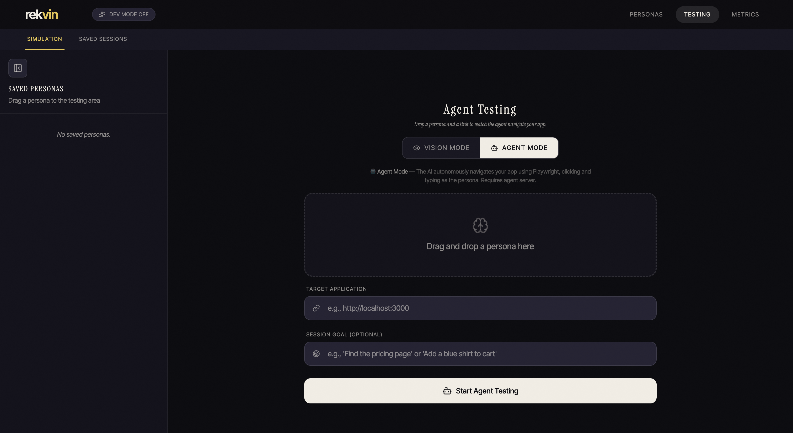
2. AI-Powered UX Research
Rekvin transforms static research into a dynamic, autonomous testing environment. By leveraging the Gemini Multimodal Live API, the platform enables real-time interaction between AI personas and live applications.
3. Core Gen AI Integration
- Multimodal Live Agent: Streams the browser's viewport at 1FPS, allowing Gemini to "see" and interact with UIs as a human would.
- Voice Intervention: Users can speak directly to the agent mid-session to redirect testing strategy or provide real-time guidance.
- Behavioral Analysis: The Metrics Hub maps vision breadcrumbs to quantitative data like Comprehension Risk and Dead-end Encounters.
4. Visual Showcase
Persona Engine
Deploying autonomous agents to test desirability and technical feasibility.
Agent Testing
Visualizing the product development lifecycle through interconnected nodes and agent interaction.
Metrics Evaluation
Transforming session recordings into actionable expert-driven verdicts and behavioral metrics.
5. Discussion of Design Choices
Dark Technical Aesthetic
The choice of a #0e0e11 background with high-contrast semantic accents is designed to minimize cognitive load and mimic the feel of professional scientific instruments. This aesthetic signals precision and focus, essential for technical product management.
Waterfall-Logic Architecture
We chose a structured, node-based workflow over a free-form canvas to force First Principles thinking. By anchoring every feature to a "Killer Assumption," we ensure that feasibility and viability are never secondary to desirability.
Precision Typography
The use of Inter Tight provides a modern, condensed feel that allows for high content density without sacrificing readability. Large display headings create a sense of scale, while mono fonts provide technical grounding.
6. Persona Calibration
Rekvin's dual-calibration system ensures grounded research:
- Pre-Test: Evidence Quality Scores prevent AI hallucinations by validating grounding data.
- Post-Test: Persona-Fit validation compares agent narration against technical outcomes to refine the user archetype.
1. Beta Release: From Lofi to Hifi
For Milestone 5, we completely departed from the initial wireframe structures, moving Rekvin into a fully realized, high-fidelity environment. This is not a refinement—it's a reimagining of the workspace as an immersive research laboratory.
High-Fidelity Visual Flow
The beta release focuses on establishing the core loop: from defining research constraints to watching autonomous agents test them.

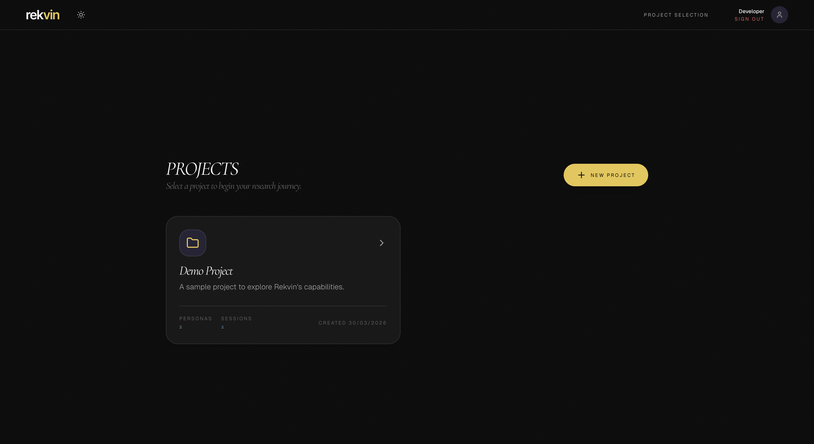
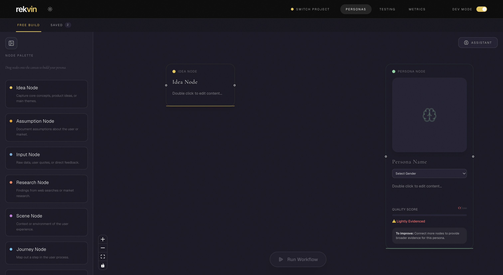
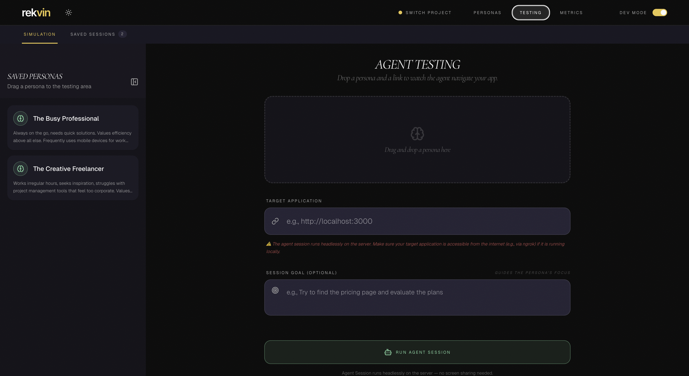


2. Rekvin Design System (Detailed)
This section outlines the core design principles, tokens, and component patterns used in the Rekvin Synthetic Persona Engine.
1. Theme Strategy: Dual Aesthetic
Rekvin supports a dual-theme system that maintains its premium identity across both low-light and high-light environments.
The core aesthetic utilized today. Inspired by night-time research and high-contrast terminal environments.
- Core Surface:
#0C0B10(Ink) - Deep black with a slight purple undertone. - Primary Text:
#FFFFFF(White) - Pure clinical white for maximum contrast. - Rules/Dividers: Translucent white (
rgba(255,255,255,0.06)). - Vibe: Immersive, surgical, nocturnal.
The conceptual counterpart. Inspired by physical research notebooks and clinical documentation.
- Core Surface:
#FFFFFF(White) - Pure white background. - Secondary Surface:
#F8F8F8(Off-White) - Used for cards and inset panels. - Primary Text:
#0C0B10(Ink) - Deep black for maximum legibility. - Rules/Dividers: Translucent black (
rgba(12,11,16,0.08)). - Vibe: Clinical, tactical, high-contrast.
2. Shared Visual Effects
- Background Texture: Both modes utilize a procedural noise overlay (
opacity: 0.035) to simulate organic paper/grain. - Backdrop Blur:
backdrop-blur-xlis constant across themes, effectively "tinting" the underlying glass based on the mode. - Corner Radius: Standard
0.625rem(10px) on both themes to maintain softness.
3. Color Palette
Base Surfaces (Semantic Mapping)
| Token | Dark Mode (Ink & White) | Light Mode (Paper & Ink) | Usage |
|---|---|---|---|
#0C0B10 (Ink) |
#FFFFFF (White) |
Main app background | |
#1A1825 (Ink-2) |
#F8F8F8 (Off-White) |
Sidebar, Cards, Panels | |
#242233 (Ink-3) |
#F0F0F0 (Off-White-2) |
Inset fields, Hovers | |
#FFFFFF (White) |
#0C0B10 (Ink) |
Main content text |
Node Taxonomy
| Type | Dark Mode Hex | Light Mode Hex | Description |
|---|---|---|---|
| Idea | #E8C547 |
#9A7D0A |
Core concepts and product seeds |
| Persona | #7ED4A0 |
#3D7051 |
Synthesized user archetypes |
| Research | #F4845F |
#B04D2D |
Web research and market data |
| Input | #6BAED6 |
#2C5E7A |
Raw user quotes and direct feedback |
4. Typography: The "Editorial" System
Rekvin uses a three-tier typography system to distinguish between storytelling, utility, and technical metadata.
- Tier 1: Storytelling (Serif)
Font: "Cormorant Garamond"
Usage: Hero statements, value headings, and emphasized pull-quotes.
Styling:italic,tracking-tighter,leading-[0.9] - Tier 2: Utility (Sans)
Font: "Inter Tight"
Usage: Body copy, descriptions, and primary navigation.
Styling:font-lightorfont-normal,leading-relaxed - Tier 3: Technical (Mono)
Font: "Geist Variable"
Usage: Metadata, buttons, versioning, and status indicators.
Styling:uppercase,tracking-[0.2em],text-[9px]totext-[11px]
5. Layout & Spacing
Rekvin follows a "Breathable & Grounded" spacing system to prevent visual clutter in research-heavy contexts.
- Hero Spacing:
mb-24(96px) between the primary value statement and the feature grid. - Section Dividers: Persistent
border-t border-rulewith large top-margins (mt-32) to separate application experience from environmental metadata. - Pillar Layout: Responsive 3-column grid (
grid-cols-1 md:grid-cols-3) with consistentgap-8(32px).
6. Visual Components & Textures
- Procedural Noise Texture: Layers a SVG-driven noise texture at
opacity: 0.2over the background. - Ambient Atmospheric Blobs: Large, highly-blurred (
blur-[120px]) circles using node colors are placed behind content to create a sense of cognitive space. Opacity is kept at 0.3. - Interactive "Glass": Cards use
bg-white/5with subtleborder-white/10borders, transitioning tobg-white/10andborder-white/20on hover.
7. Core UI Components
Based on the high-fidelity Beta flow, Rekvin utilizes several specialized UI components:
- Canvas Nodes: Interactive glass containers (using React Flow) that represent key evidence artifacts like Personas, Research, and Ideas. Structured with Tier 3 (Mono) metadata headers and Tier 2 (Sans) body descriptions.
- Connecting Edges: Spline-based lines representing the "Waterfall Logic" flow between constraints and testable UI outputs.
- Global Lenses (D/V/F Toggles): A specialized pill-shaped navigation group allowing users to highlight Desirability, Viability, or Feasibility nodes globally.
- Testing Hub Console: A two-pane interface splitting the screen between the Persona's "Thought" narration and the Driver Agent's visual execution environment.
- Metrics Dashboard: Evaluative layouts mapping subjective interactions into quantitative behavioral data tables using the "Ink & White" dark aesthetic.